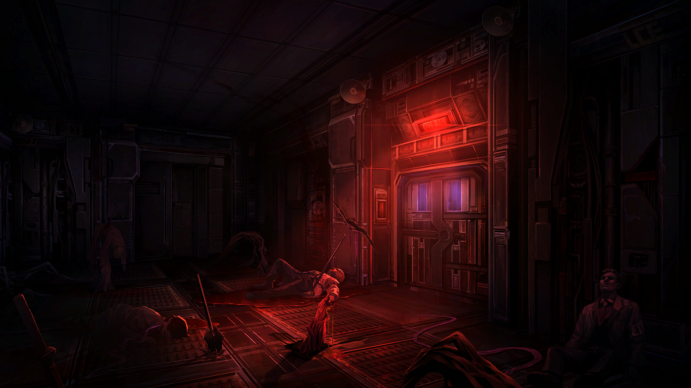
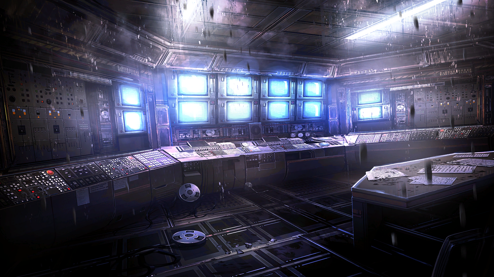

Vị trí: Ban nghiên cứu LCE - Lối vào khu phát thanh

Tù Nhân #11Sinclair
Có vẻ là chỗ này.
Tù Nhân #8Ishmael
Hmm, mỗi nơi này là có đèn sáng thôi... Nó ghi là khu vực phát thanh.
Tù Nhân #9Rodion
Đến đây... hẳn là quyết định đúng đắn đi?
Tù Nhân #5Meursault
Có thể nói là tất cả các lối đi khác ngoài lối đến khu vực phát thanh đều đã bị chặn hết.
Tù Nhân #13Gregor
Dù gì đi nữa... chúng ta cũng có còn lựa chọn nào khác ngoài tới đây đâu.
Quản LýDante
<Tối quá không nhìn rõ gì cả...>
Tù Nhân #8Ishmael
Điện gần như đã cúp hết rồi nên cửa sẽ không bị khóa đâu.
Khu phát thanhLoa
Đứng yên đó.
Khu phát thanhLoa
Nếu còn tiến thêm một bước nữa... chúng tôi sẽ ngay lập tức dùng vũ lực để đáp trả.
Lúc đó, một giọng nói quen quen phát ra từ cái loa, cảnh báo chúng tôi một cách gay gắt.
Khu phát thanhLoa
Phía trước có rất nhiều mìn an ninh được lắp đặt. Ngay cả khi mấy người có vượt qua được thì cũng phải đối mặt với toàn bộ những người đang ở trong này. Tất cả những người ở đây đều có khả năng chiến đấu hết.
Khu phát thanhLoa
À~ Ngay cả khi các người tự tin đến vậy, tụi này cũng đã có sẵn thiết bị tự hủy đó. Một quả bom chứa đầy... những mảnh răng cưa... siêu nhỏ...
Khu phát thanhLoa
Từ từ đã, cái này viết gì vậy? Cái... bom... gì? Lần đầu tiên thấy có người còn viết chữ xấu hơn cả tôi.
Khu phát thanhLoa
À, đây... "nếu ném quả bom này, nó sẽ phát nổ trong bán kính 100 mét".
Khu phát thanhLoa
Ê nha! Bom bủng kiểu đấy là phạm phải Cấm Kỵ rồi còn gì nữa... Có viết kiểu gì thì cũng phải viết cho hợp lý chút chứ...
Khu phát thanhLoa
G-Gì thì gì. Nếu không muốn thành đồng chí bị đè dẹp lép trong đống đổ nát với tụi này, hãy quay về ngay lập tức!
Tù Nhân #11Sinclair
Tụi này nghe được hết đó...
Tù Nhân #2Faust
Bom khả năng chỉ là bịa đặt. Tất cả các loại bom thuộc loại chất nổ... theo quy định của Đầu Não, phải được lắp đặt vào một thứ gì đó.
Tù Nhân #1Yi Sang
Mm...phạm vi quá lớn. Tầm nổ rộng như vậy... sẽ vi phạm nhiều quy định và thỏa thuận.
Khu phát thanhLoa
... Tuy nhiên, mìn an ninh là đồ thật hàng thật. Nếu các người còn đến gần hơn... điện quá tải sẽ thiêu rụi các người trong chớp mắt đó.
Giọng nói nổi đóa đó càng nghe càng thấy quen quen. Chắc chắn là đã nghe qua nó ở đâu đó rồi...
Tù Nhân #13Gregor
Theo lời Alyssa thì Hohenheim sẽ ở đâu đó quanh đây nhỉ...
Khu phát thanhLoa
Khoan, mấy người vừa nhắc đến Alyssa à?
Tù Nhân #2Faust
Cái giọng này... không thể nào lẫn đi đâu được.
Giờ thì có một giọng nói mà rõ là quen thuộc thật vang lên.
???Giọng Nói Không Được Chào Đón Cho Lắm
Dựa vào cái giọng nói không mấy hoan nghênh đó...
???Giọng Nói Không Được Chào Đón Cho Lắm
Mấy người này có thể an toàn cho vào đây.
Tù Nhân #2Faust
Từ giọng nói không được chào đón cho lắm đó, có vẻ như chúng ta có thể an toàn tiếp cận họ.
Rồi cùng với tiếng kêu ầm ầm...
Cửa phòng phát thanh chậm rãi mở ra, và trước khi tôi có thể xác định chính xác ai đang ở bên trong...
Vị trí: Khu phát thanh ban nghiên cứu LCE

??????
A, trời ạ! Là mấy người sao? Vậy mà không nói sớm!
LCDEzra
Là tui nè, còn nhớ tui hông?
Tù Nhân #11Sinclair
A, là chị Ezra!
Đó là Ezra, người đã cung cấp không ít kiến thức về huyết quỷ qua cái lần gọi video trước khi tiến vào La Manchaland.
LCDEzra
Nghe nói mấy người đã rất xuất sắc ở La Manchaland đó nha?
LCDEzra
Cũng nhờ công tụi tui giúp mà phải hông? Ầy, vậy trong số mấy người ai là con huyết quỷ mạnh mẽ vô cùng đó thế?
Tù Nhân #11Sinclair
Hửm? Vâng? À... Đó...
LCDMoses
Gác chuyện thăm hỏi lại lúc khác đi Ezra à.
Ngay sau đó người tên là Moses xuất hiện.
Tôi đã từng thấy bà ấy trong cái lần gọi video... Có vẻ bà ấy là người đảm nhận vai trò trưởng nhóm của LCD.
Tù Nhân #8Ishmael
... Hồi nãy người đe dọa tụi tôi bằng bom chính là cô phải không?
LCDEzra
Biết làm sao được~ Tui đã nghĩ rằng làm gì còn ai ở đây ngoài chúng tui, nhưng rồi đột nhiên nghe tiếng một nhóm tầm mười mấy người chạy đến đây... Nhìn kia kìa, màn hình chả hiện gì hết, chắc hỏng mất tiêu rồi...
Ezra chỉ hướng cằm vào chỉ những màn hình đã ngừng hoạt động đặt trong khu phát sóng.
LCDEzra
Nói thêm thì, có một anh bạn rất thông minh ở đây đang sửa lại đống camera. Do mất điện rồi nên sẽ mất một chút thời gian.
Trưởng ban nghiên cứu LCEHohenheim
Tôi chẳng nghĩ rằng gặp mấy người lại là điều gì đó tốt đẹp cho cam, nhưng cũng không ngờ rằng sẽ gặp lại nhau theo cái cách này.
Dưới màn hình mà Ezra chỉ vào, Hohenheim, trông có vẻ gầy gò hơn, đang mò mẫm một mạch điện phức tạp, rồi gật đầu với chúng tôi với vẻ mặt không mấy vui vẻ.
Ban nghiên cứuMarton
Chào. Thật may là không thấy ai bị thương.
Marton đã thay mặt anh ta chào hỏi.
Trưởng ban nghiên cứu LCEHohenheim
Tiện thể, Alyssa đã cho biết vị trí của chúng tôi phải không? Hmm. Nếu đã không dẫn theo cô ấy cùng, chắc là cổ bị thương nặng hoặc đã chết rồi cũng nên.
Tù Nhân #8Ishmael
Ừm... Cô ấy bị thương nặng. Nhưng chúng tôi đang tìm cách cứu cô ấy.
Ishmael trả lời với vẻ chán ngấy trước cái thái độ lạnh nhạt như thể đã định đoạt số phận cấp dưới của chính anh ta.
Trưởng ban nghiên cứu LCEHohenheim
"Tìm cách", nói cứ như thể chơi trò truy tìm kho báu vậy.
Trưởng ban nghiên cứu LCEHohenheim
Thà rằng kết liễu mạng sống Alyssa luôn thì nó còn có ích cho cổ hơn ấy.
Tù Nhân #7Heathcliff
Quái gì cơ... Bộ anh không thấy những gì tụi này đã làm cho đến giờ à? Đâu phải là không có hy vọng, đừng có dễ dàng từ bỏ thế chứ.
Ban nghiên cứuMarton
Xin hãy hiểu cho anh ấy. Một số kẻ xâm nhập... dường như tận hưởng việc hành hạ người khác, nên hãy cẩn thận...
Ban nghiên cứuMarton
Tôi và trưởng ban đã ở gần phòng thí nghiệm khi cuộc tấn công bắt đầu. Không có nhiều nhân viên đi lại và nơi này cũng gần khu phát thanh.
Ban nghiên cứuMarton
Có lẽ cũng là lý do duy nhất chúng tôi có thể trốn được đến đây còn nguyên vẹn.
Tù Nhân #3Don Quixote
Alyssa chắc chắn sẽ cầm cự được.
Tù Nhân #3Don Quixote
Bọn tôi đã hứa. Rằng chúng tôi sẽ quay lại và cứu cô ấy.
Chờ đã. Xin lỗi vì làm gián đoạn bầu không khí ấm áp này… Mấy người đến đây tức là Sắc Vị đó cũng đang trên đường tới đúng không?
LCDEzra
Ông ấy giờ đâu rồi? Chắc đã lên đường tìm mấy kẻ tấn công rồi nhỉ...
LCDMoses
... Ezra.
Kể từ lúc chúng tôi vào đây, không hiểu sao Moses - người đang nhìn chằm chằm vào Outis, đột nhiên chuyển ánh mắt sang Ezra.
LCDEzra
Đội trưởng à! Nếu hợp lực được với Xích Sắc Vị thì dù không có bé Út chúng ta vẫn đủ cơ hội chiến thắng mà phải không?
LCDMoses
Thật vậy sao. Thế mà... có vẻ như Xích Thị đã không tới đây với chúng ta rồi.
LCDMoses
Chẳng cần trình bày lý do, chỉ cần nhìn vào nét mặt của bọn họ là đủ hiểu.
LCDEzra
Gì cơ?! Không— Tại sao chỉ có mấy người lết tới đây thôi vậy!
Ezra hét lên với vẻ mặt như vừa thấy khách không mời mà đến.
Tù Nhân #8Ishmael
Tụi tôi... Tụi tôi cũng đâu có muốn một thân một mình đến đây đâu...
Tù Nhân #13Gregor
Ông bạn dẫn đường bị cầm chân rồi.. Theo Ryōshū bảo thì kẻ đó gọi là... "Dưỡng Phụ Ngón Cái" của Tổ Nhện...
LCDMoses
Cũng giống như những kẻ đã đột nhập vào cơ sở nghiên cứu trụ sở chính... Chắc hẳn kẻ đó cũng có sức mạnh đáng gờm nhỉ.
Tù Nhân #12
Outis
... Ả ta là một kẻ có kỹ năng xuất sắc mà không thể nào coi nhẹ được.
LCDMoses
So với Euryalos của đơn vị Argos thì sao?
Tù Nhân #12
Outis
Hmm... Khác biệt cũng không lớn lắm...
Tù Nhân #12
Outis
Chờ đã. Ngươi... biết đơn vị đó lẫn cái tên đó...
Moses nhắm mắt lại, chìm vào suy nghĩ ngắn ngủi, dường như không có ý định trả lời lời nói của Outis,
rồi nhanh chóng sắp xếp lại suy nghĩ, quay trở lại chủ đề ban đầu và tiếp tục nói.
LCDMoses
... Charon. Con bé bị bắt làm con tin rồi phải không?
Tù Nhân #11Sinclair
Hả? Sao bà biết được...
LCDMoses
Kẻ tấn công được tường thuật lại dưới dạng số ít. Chi tiết đó có thể đơn thuần là bị bỏ qua thôi, nhưng thế thì vẫn thể hiện rằng số người vẫn chỉ là thiểu số.
LCDMoses
Với cả... dù không dắt theo tài xế, các cô cậu cũng chẳng thể hiện một chút niềm tin nào về việc Xích Thị sẽ sớm quay về sau khi xử lý xong kẻ tấn công cả.
Tù Nhân #12
Outis
.......
LCDEzra
Đội trưởng chỉ cần nhìn là gần như có thể biết mọi thứ rồi.
LCDEzra
Nhưng mà mấy người không gặp ai trên đường đến đây à?
Tù Nhân #8Ishmael
May là ngoài đám Tội Chủng với hình nhân ra thì cũng không có gì... Chờ đã, tụi này cũng có thứ để hỏi mà!
Ishmael đã tìm được một chủ đề để nói giữa hàng hoạt câu hỏi ùa đến.
Tù Nhân #8Ishmael
Hai người thuộc bộ phận LCD. Sao lại có mặt tại trụ sở chính nơi đặt bộ phận LCE vậy?
LCDEzra
À, chuyện là...
LCDEzra
Hôm nay là ngày bộ phận LCE dự kiến tổ chức buổi công bố kết quả quan trọng.
LCDEzra
Đó là buổi công bố vôôô cùng cực kỳ quan trọng đến nỗi mỗi ngày chúng tui nhận được hàng tá thông báo yêu cầu phải tham dự... Phải hông nào đội trưởng? Có vẻ như mọi người đã quên hết rằng chúng tui cũng là một bộ phận cực kỳ bận rộn nha.
Trưởng ban nghiên cứu LCEHohenheim
Xin lỗi vì bắt bẻ, nhưng nó thật sự là một công bố vôôô cùng cực kỳ quan trọng.
LCDEzra
Rồi, tui hiểu thành quả của mấy người rất quan trọng, nhưng bộ phận chúng tui cũng rấấất rấấất...
Quản LýDante
<Khoan đã, chuyện đáng chú ý bây giờ đâu phải là cái công bố đó có quan trọng hay không đâu...>
LCDMoses
Buổi công bố đã chẳng thể bắt đầu, nên chúng ta cũng chẳng thể đánh giá được tầm quan trọng của nó.
LCDMoses
Tóm lại thì vì sự kiện đó mà các thành viên trong đội chúng tôi đã tập trung tại bộ phận LCE.
LCDMoses
Và có một người cần được giới thiệu ở đây. Một thành viên mới gia nhập của LCD.
LCDEzra
Tức là quy mô của chúng tui đã bự hơn rồi đó!
LCDMoses
Nghe bảo các người có quen biết nhau.
Ở phía bên kia có một gương mặt trông thật quen, nhưng đồng thời tôi không ngờ lại có thể tái ngộ tại đây, tiến lại gần.
LCDAeng-du
Thật ngại khi lúc nào cũng gặp mọi người trong mấy cuộc hỗn chiến như này. Hy vọng mọi người vẫn khỏe mạnh.
Tù Nhân #6Hồng Lộ
Cô Aeng-du! Cũng lâu rồi không gặp nhỉ.
Tù Nhân #6Hồng Lộ
Ông Kim Nón Tre... vẫn còn đang hồi phục à?
LCDAeng-du
Ừm. Thủ lĩnh... dẫu cơ thể đã lành lặn từ lâu, nhưng có vẻ như tâm trí người cần thời gian để thông suốt trở lại. Tôi không còn lựa chọn nào khác ngoài việc chờ đợi.
LCDAeng-du
Chẳng bao lâu nữa người sẽ sớm bình phục thôi. Cho đến thời khắc đó, tôi sẽ lặng lẽ chuộc tội cho những sai lầm đã phạm phải...
... Aeng-du dường như nhớ lại việc mình đã đâm Kim Nón Tre khi Dị Biến lan rộng lên ông ta.
Tù Nhân #11Sinclair
Ừm, thật mừng khi cậu thích nghi tốt với việc gia nhập đội LCD.
Nhận thấy nét mặt của Aeng-du có vẻ u ám, Sinclair nhanh chóng lên tiếng làm không khí bớt căng thẳng.
LCDAeng-du
Dẫu đang ở trong tình thế phải dựa dẫm vào mọi người. Cũng như chẳng còn nơi nào để trở về...
LCDAeng-du
Nhưng nhất định một ngày nào đó... cùng với thủ lĩnh...
LCDAeng-du
Chúng tôi sẽ hồi hương về tập đoàn S.
Tù Nhân #8Ishmael
Xem ra bên họ cũng đang nỗ lực để hòa nhập.
Tù Nhân #13Gregor
Có đi đến đâu thì việc cố thích nghi lại từ đầu vẫn thật khó nhằn.
LCDMoses
Hầu như các thành viên đều đã quen mặt nhau rồi nhỉ...
 Tù Nhân #11
Sinclair
Tù Nhân #11
Sinclair
 Tù Nhân #8
Ishmael
Tù Nhân #8
Ishmael
 Tù Nhân #9
Rodion
Tù Nhân #9
Rodion
 Tù Nhân #5
Meursault
Tù Nhân #5
Meursault
 Tù Nhân #13
Gregor
Tù Nhân #13
Gregor
 Quản Lý
Dante
Quản Lý
Dante
 Khu phát thanh
Loa
Khu phát thanh
Loa
 Tù Nhân #2
Faust
Tù Nhân #2
Faust
 Tù Nhân #1
Yi Sang
Tù Nhân #1
Yi Sang
 LCD
Ezra
LCD
Ezra
 LCD
Moses
LCD
Moses
 Trưởng ban nghiên cứu LCE
Hohenheim
Trưởng ban nghiên cứu LCE
Hohenheim
 Ban nghiên cứu
Marton
Ban nghiên cứu
Marton
 Tù Nhân #7
Heathcliff
Tù Nhân #7
Heathcliff
 Tù Nhân #3
Don Quixote
Tù Nhân #3
Don Quixote

 LCD
Aeng-du
LCD
Aeng-du
 Tù Nhân #6
Hồng Lộ
Tù Nhân #6
Hồng Lộ